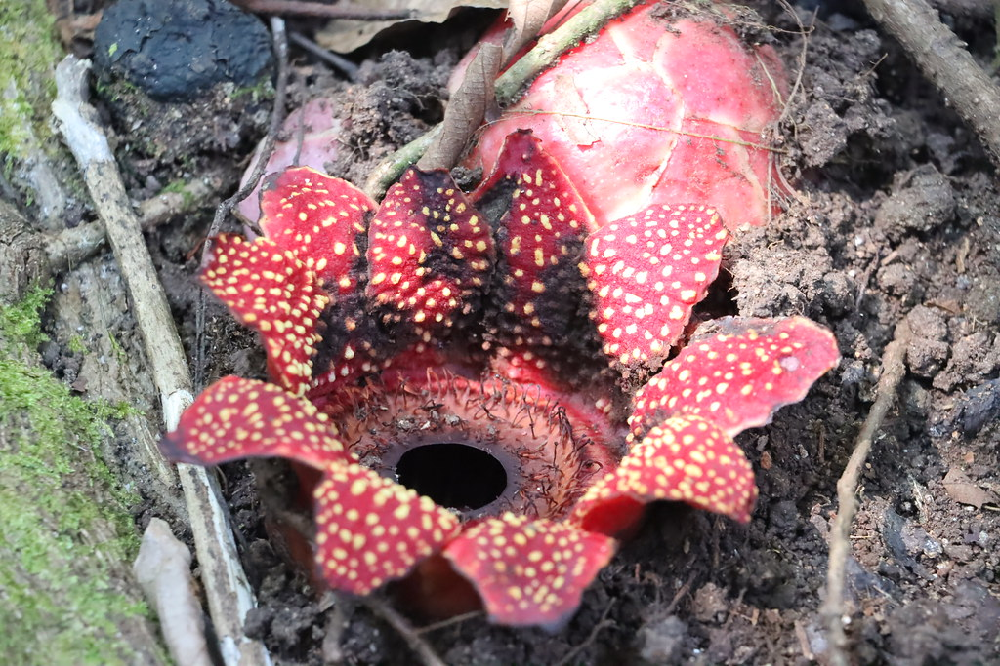
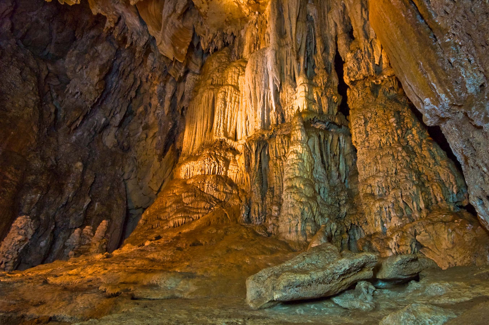

ทริปเขาสก 2 วัน 1 คืน: เชี่ยวหลาน, Rafflesia และถ้ำไซฟา

เขาสก เหมาะกับนักท่องเที่ยวที่อยากเปลี่ยนจากบรรยากาศทะเลมาเป็นธรรมชาติป่าฝน จุดหลักที่ไม่ควรพลาดคือ เขื่อนเชี่ยวหลาน สำหรับกิจกรรมล่องเรือและพักแพ ส่วนคนที่สนใจธรรมชาติพิเศษสามารถวางแผนช่วงที่มี ดอก Rafflesia และเพิ่มจุดเที่ยวอย่าง ถ้ำไซฟา เพื่อให้ทริปมีมิติมากขึ้น
รูปแบบที่นิยมคือ 2 วัน 1 คืน โดยวันแรกเข้าเขตอุทยาน ทำกิจกรรมบนผืนน้ำ และพักกลางธรรมชาติ จากนั้นวันถัดไปค่อยเก็บจุดเดินป่าหรือถ้ำตามสภาพอากาศ ข้อสำคัญคือควรตรวจพยากรณ์อากาศล่วงหน้าและเตรียมอุปกรณ์ให้เหมาะกับทางชื้น เช่น รองเท้าเดินป่า เสื้อกันฝน และน้ำดื่มสำรอง
ผู้ที่ต้องการทริปคุณภาพควรเผื่อเวลาเดินทางเข้า-ออกอุทยานให้มากกว่าปกติเล็กน้อย เพราะระยะทางในพื้นที่ธรรมชาติและการต่อเรืออาจใช้เวลานานกว่าที่คาด โดยเฉพาะช่วงวันหยุดหรือฤดูท่องเที่ยวหลัก การเผื่อเวลาไว้จะช่วยลดความเร่งและทำให้ประสบการณ์โดยรวมดีขึ้น
ในเชิงการวางแผนงบประมาณ แนะนำแยกค่าใช้จ่ายหลักเป็น 3 ส่วน ได้แก่ ค่าที่พักแพ/เรือ, ค่าเดินทางภาคพื้นดิน และค่าอาหารระหว่างทริป เมื่อจัดงบแบบนี้จะควบคุมค่าใช้จ่ายง่ายขึ้นและช่วยเปรียบเทียบแพ็กเกจท่องเที่ยวได้ชัดเจนกว่าการจองแบบรวมโดยไม่เห็นรายละเอียด
ดอก Rafflesia และป่าฝนโบราณ

ถ้ำไซฟาและลานหินงอกหินย้อย

แนวทางจัดทริปที่เหมาะกับผู้เดินทางส่วนใหญ่
- วันแรก: เดินทางเข้าเขาสก + กิจกรรมเชี่ยวหลาน + พักแพ
- วันที่สอง: จุดธรรมชาติบนบก เช่น เส้นทางชมพืช/ถ้ำ แล้วเดินทางกลับ
- ติดตามอัปเดตระดับน้ำและสภาพฝนก่อนทุกทริป
แหล่งที่มา: TAT – Khao Sok National Park, TAT – Rafflesia in Khao Sok National Park, TAT – Tham Si Fa (Blue Cave), ภาพประกอบ: Wikimedia Commons (เชี่ยวหลาน), Pexels (ป่าฝน), ภาพถ้ำ: คลังภาพเว็บไซต์